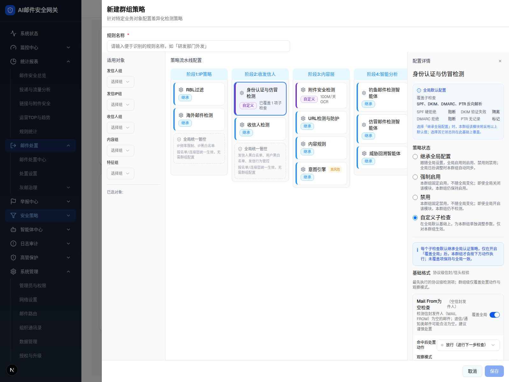

| 所属组件 | 2.3 群组策略编辑抽屉 GroupPolicyDrawer |
| 主文件 | filter-rules-group-policy/index.html |
| 触发路径 | 中栏「身份认证与仿冒检测」策略卡 → 右栏 → 选「自定义子检查」→ 开子检查「覆盖全局」 |
| demo 源 | renderConfigPanel authSpoofing 分支 L1901-L2201（基础格式/认证协议/仿冒特征） |
触发路径：选「自定义子检查」radio → 展开三组；开某子检查「覆盖全局」Switch → 展开其处置动作/观察模式
「覆盖全局」Switch 可开合（展开/收起配置体）；处置动作下拉合成菜单可选；观察模式可切
针对特定业务对象配置差异化检测策略
已选对象:
IP频率限制、IP黑白名单
按名单/连接层统一生效，无需群组配置
发信人黑白名单、用户黑白名单、发信行为管控
按名单/连接层统一生效，无需群组配置
选择「继承全局配置」时，本群组该模块将采用以上默认值；选择其它状态则在此基础上覆盖。
每个子检查默认继承全局认证策略，仅在开启「覆盖全局」后，本群组才会按下方动作执行；未覆盖项保持与全局一致。
最先执行的协议级检测项；群组级仅覆盖处置动作与观察模式。
检测信封发件人（MAIL FROM）为空的邮件；退信/通知类邮件可能合法为空，建议谨慎处置
仅记录命中日志，实际放行投递，不执行上方动作
检测信封发件人地址包含非法字符或不符合 RFC 格式的邮件
检测信头 From 与信封 MAIL FROM 不一致的邮件；邮件列表/代发场景可能合法不一致

| 分组 / 元素 | 说明 |
|---|---|
| 状态=自定义子检查 | 身份认证与仿冒检测选「自定义子检查」→ 展开三组子检查 |
| 蓝色说明条 | 「每个子检查默认继承全局…仅在开启覆盖全局后…」 |
| 基础格式（全版本） | Mail From为空 / Mail From格式错误 / 信封-信头一致性；每项「覆盖全局」Switch → 展开 命中后处置动作(4档 放行/隔离审查/拒绝并退信/静默丢弃) + 观察模式 |
| 认证协议 | SPF(4结果)/DKIM(4)/DMARC(3, 无「进行下一步」)/PTR(4)；覆盖全局后逐结果配 5 档处置动作；DMARC 附依赖说明 |
| 仿冒特征（仅传统版） | 相似域名（相似度阈值 Slider 50-100%）/ 显示名仿冒（匹配模式 严格/称谓/正则）；AI 版不渲染（本图 AI 版故无此组） |
| 高风险提示 | 格式项设 reject/drop、协议 drop、仿冒 drop 时出现红字高风险提示 |
| 卡片摘要 | custom+hasSubPolicies → 「已覆盖 N 项子检查」/「全部继承」 |
| 比对项 | demo 实际 DOM | 嵌入 spec 的 HTML | 是否一致 |
|---|---|---|---|
| 外层 | div.fixed.inset-0.z-50 | .gp-shell | ⚠ 有意差异 |
| 节点总数 | 363 | 363 | ✅ |
| 子检查覆盖 Switch 数 | 8 | 8（基础格式3+认证协议4+…，本图首项已覆盖展开） | ✅ |
| 处置动作 Select | 6 个 | 含类型/适用对象/已展开动作 | ✅ |
| 仿冒特征组 | AI 版：不渲染 | 未包含（!capabilities.ai 才有） | ✅ |
| 已展开配置体 | 仅「覆盖全局」开启的子检查渲染动作/观察 | 同（首项 Mail From 为空 已展开） | ✅ |